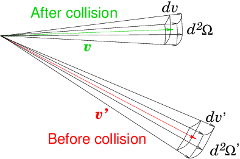
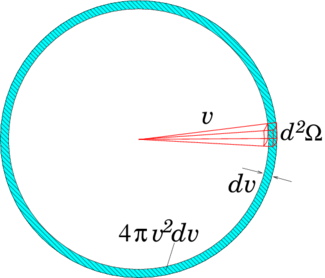
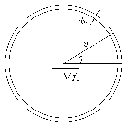
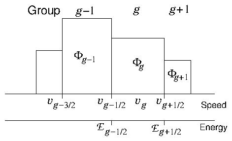

When there are strong processes that drive the velocity distribution
function away from equilibrium, it is generally
important to account for the full distribution of velocities of
particles to understand their transport. Sources of particles with
kinetic energy substantially higher than the typical (e.g. thermal)
energy will have this effect. Examples include all sorts of
reactions; for example the chemical reactions
that occur in combustion, or, as we will address in this chapter, the
nuclear reactions that involve neutrons.47
9.1 Collisions of Neutrons
Neutrons experience no net electric or magnetic forces, because they
are uncharged, and usually gravity is ignorable; so in Boltzmann's
equation the term proportional to the acceleration a can
usually be neglected. Self-collisions are also negligible. It is the
background matter through which the neutrons are moving that
provides the targets with which the neutrons collide. It can be taken
to consist of practically stationary atoms.
Collisions give the crucial terms in Boltzmann's equation. They arise
from a whole host of different nuclear species, and the relevant
cross-sections have very strong dependence on
neutron kinetic energy (or equivalently speed, v). We generally sum
over all the relevant species to give appropriate total source and
sink rates per unit phase-space volume. In addition to the sink of
neutrons, −Σt vf from all possible collisions, there are
sources arising from scattering, and from fission
reactions.48 For
fission and scattering, as illustrated by Fig. 9.1, we
consider an incoming neutron denoted with a prime (′), having
velocity given by speed v′, and direction unit vector
Ω′ (so v′=v′Ω) giving rise
to an outgoing (sourced) neutron with speed v, and direction
Ω. The
"macroscopic cross-sections"
are written
respectively Σf and Σs. They are functions of both
incoming and outgoing velocity, which is denoted (v′→v,Ω′→Ω).

Figure 9.1: Collisions give a source of particles in dvd2Ω as a result
of particles that (before the collision) are in
dv′d2Ω′. Both induced fissions (weighted by the average
neutron yield ν) and scattering events contribute. The sink
term in dvd2Ω is the sum of all collisions that remove a
particle from dvd2Ω.
Possible spatial dependence (on x) is implicit. Each fission
gives rise to an average number of outgoing neutrons ν typically
greater than one, so for source the quantity required is actually
νΣf. Also, to calculate the source we must integrate over
all possible incoming velocities, for which we write the flux
density49 as v′f′ and the velocity element as
d3v′=v′2 d2Ω′ dv′. Thus Boltzmann's equation becomes the
neutron transport equation:
∂f
∂t
+ vΩ.
∂f
∂x
=
−Σtvfsink
+
⌠ ⌡
[
νΣf(v′→ v,Ω′→Ω)fission
+
Σs(v′→ v,Ω′→Ω)scattering
]v′f′v′2d2Ω′ dv′.
(9.1)
This specific form of the collision term can also be used to treat
collisions and chemical reactions between neutral molecules in a gas
mixture50. For neutrons, the cross-sections are very
complicated functions of speed v′, and require extensive data and careful
integration to produce accurate collision terms, even when f is
known. What's more, we have to deal with an integro-differential equation. It
is not obvious how to solve it to find f self-consistently.
9.2 Reduction to multigroup diffusion equations
Solving six- or seven-dimensional integro-differential equations
numerically is a major undertaking. If we just simple-mindedly
discretize the distribution function f(v,x,t) on finite
grids in each dimension, the amount of data quickly gets out of
hand. Grids of length 100 require multiple terrabytes of
representation 1006 = 1012, and solving for all of the discrete
elements in phase-space becomes a grand computing challenge. Although
there are some reasons to tackle that challenge, it is more usual, and
historically more useful, instead to reduce the dimensionality of the
problem by making appropriate choices of representation.
When the distribution function is nearly thermal, it is reasonable to
describe it by just a few, low-order,
moments of the velocity. This has
the effect of reducing the three-dimensions of velocity-space to just
a few dependent parameters. They are the density
n=∫f d3v, the mean velocity ∫vf d3v/n, and the mean kinetic energy per particle, equivalent to the
temperature: ∫1/2m v2 fd3v/n=3T/2. Formally, taking the corresponding moments of
Boltzmann's equation ends up giving us the standard fluid equations;
continuity, momentum, and energy conservation. Thus, solving such a
reduction has already been addressed in our discussion of numerical
treatment of fluid problems.
What do we do, though, when the velocity distribution is far from
thermal, as it is in a reactor? We must keep account of that velocity
dependence, because collision cross-sections depend upon it. A
different type of approximation, useful in cases like neutron
transport, because collisions are dominant, is to take the velocity
anisotropy to be small. The distribution
function f is nearly spherically symmetric: nearly
independent of Ω; and it is unnecessary to represent the
velocity-direction dependence of f in any detail.

Figure 9.2: Illustrating the spherical volume in velocity-space over
which the directional integral is performed.
It is necessary to retain just enough information about the anisotropy
of f(v) to represent the directed flux density of
neutrons, which is what determines their
transport. Consider neutrons of a specific speed v (i.e. in the
element dv at v). Integrate the full transport equation
(9.1) v2d2Ω (=d3v/dv since d3v=v2d2Ωdv) over the spherical velocity space element, as illustrated in
Fig. 9.2. We will denote that
element just dv, to remind us of the speed choice, although its
total velocity-space-volume is 4πv2 dv. Now we denote the
distribution function integrated over direction as
F(v) =
⌠ ⌡
dv
f v2d2Ω =
⌠ ⌡
dv
f d3v/dv.
(9.2)
So the number of particles per unit volume
in the speed range dv is F(v)dv.
The first term in the
angle-integrated Boltzmann equation becomes
∂F
∂ t
.
The second term becomes
⌠ ⌡
dv
vΩ.∇f d3v/dv=∇. [
⌠ ⌡
dv
Ωvf d3v/dv] = ∇. Γ(v).
(9.3)
Here, Γ(v) dv = ∫dvΩvf d3v is the
flux-density of the particles in the speed
element dv; so Γ(v) is the speed distribution of the
flux-density, a vector quantity.
Since all Σ are independent of Ω (only the difference
Ω−Ω′ matters), the first (sink) term on the right of
eq. (9.1)
becomes −Σtv F(v) and the second (source term) can be written
Q(v)=
⌠ ⌡
[νΣf(v′→ v)+Σs(v′→ v)]v′F(v′) dv′,
(9.4)
in terms of Σf and Σs integrated over direction.
The direction-integrated transport equation is then
∂F(v)
∂t
+ ∇. Γ(v) = −ΣtvF(v) + Q(v),
(9.5)
This equation becomes a diffusion equation if the flux-density is
proportional to the gradient of the density, an approximation usually
called Fick's law.
Written in terms of F(v), this proportionality is
Γ(v) = −D ∇F(v),
(9.6)
where D is the "diffusion coefficient". The value of D
is approximately v/3Σt, as outlined at the end of this
section.
We then have the speed-resolved (or equivalently
energy-resolved) diffusion
equation
∂F(v)
∂t
− ∇. [D∇F(v)] = −Σtv F(v) + Q(v).
(9.7)
The lowest-order anisotropy of f(v) is contained in
Γ
=D∇F(v), but the collision terms in this approximation are
independent of any anisotropy. The equation applies for all values of
the speed, v.
Enrichment: Derivation of Diffusion Coefficient.
The neutron (kinetic)
transport equation (9.1) can be turned into a spatial
diffusion equation by considering a fixed speed v. To lowest
order, we approximate the angular dependence of f as
being a constant plus a term proportional to μ = cosθ; i.e. as f=f0+f1μ, where f0 and f1 are independent of
Ω. These are the first two terms of an expansion of the
angular dependence in spherical harmonics. Reactor physics
literature calls this the P1 Approximation. Obviously this
approximation only makes sense if the distribution has an
approximate axis of (velocity) cylindrical symmetry, relative to
which the polar angle θ is measured. In the absence of
inherent material anisotropy, the local axis of symmetry must be in
the direction of of the density gradient ∇f0.
Integration over a spherical velocity element with
μ = cosθ and the angle θ measured from the
direction ∇f0.

If we substitute into eq. (9.1) and equate orders of μ, ignoring the partial
time derivative (since we presume the distribution in angle relaxes
quickly), we then obtain at order μ
|∇f0| = (−Σt + Σs1)f1,
where Σs1 is the part of the scattering term proportional
to μ, which is always smaller than Σt. (Sometimes
Σs1 is approximately ignorable.) Unlike scattering,
fission does not contribute to this anisotropic component, except
from its part in Σt, because it is generally presumed that
there is no significant correlation between the direction of neutron
emission from a fission event and the incoming neutron. [The degree
of anisotropy in neutrons from fission reactions is low but
formally non-zero, especially at higher incoming neutron energy.]
The contribution from
the speed element dv to the directed
spatial flux density (which is along the symmetry axis direction) is
Γ(v)dv =
⌠ ⌡
f v μd3v =
⌠ ⌡
fv μ 2πv2dμdv = 2π v3dv
⌠ ⌡
(f0+f1μ)μdμ =
1
3
vf1 4π v2 dv .
Incorporating the previous equation, we then have
Γ(v) = −
v
3(Σt−Σs1)
∇(f0 4πv2).
This is Fick's law relating a flux density Γdv to the
gradient of a density f4πv2dv, times a diffusivity
D =
v
3(Σt−Σs1)
.
9.3 Numerical Representation of Multigroup Equations
We've made substantial progress in making the transport equation more
managable, lowering its dimensionality from six phase-space dimensions
to four (3 space and 1 speed). Even so, we have to choose how to
represent the distribution in speed (or energy), as well as the
spatial representation.
9.3.1 Groups

Figure 9.3: Groups are ranges in speed (equivalently energy) into which
the neutrons are lumped. They are very rarely of equal width in
speed or energy.
The natural discretization in speed is to use ranges of speed, or
equivalently energy.
In reactor physics the ranges are called "groups". It is like
representing the speed distribution as a histogram (see Fig. 9.3). A point in phase
space (particle, if you like) belongs to the (integer) group g if
its speed satisfies vg−1/2 ≤ v < vg+1/2. The
half-integer-index speeds are the extrema of the speed range belonging
to group g, and this group is regarded as having a typical or
average speed vg. Put another way, the group can be considered to
be the integral over the finite speed element ∆vg = vg+1/2−vg−1/2. Take there to be NG groups in all.
Then each neutron group separately satisfies a diffusion equation like
(9.7), except that the source integral Q(v) for each
group contains, in its integral, contributions from all the other
groups, corresponding to fission neutrons appearing in one group when
they were caused by another group, or scattering directly from one
speed (group) to another.
∂Fg
∂t
− ∇. [ Dg∇Fg] +Σtgvg Fg = Qg.
(9.8)
Since Q depends linearly on the Fg, through the integrals
∫v′F(v′)dv′, the discretized equations
are naturally expressed in terms of a matrix equation acting on a column
vector of group fluxes
∂F
∂t
+( − L +ΣtV)F = Q=AF.
(9.9)
The NG×NG matrices L, Σt and V are
diagonal, and their gth diagonal elements are ∇. Dg∇,
Σtg, and vg, respectively. Matrix A, which
multiplies F to provide the source term Q, is not
diagonal. It couples together the different rows of the matrix
equation, the different groups. The crucial point is that the
collision matrices Σt and A can be calculated at any
position x by performing appropriate integrals over speed v
and then sums over different nuclear species. These require extensive
information about the cross-sections for different types of
collisions, but the velocity integrals only have to be done once.
Spatially Uniform Problem If we are treating an idealized
"infinite homogeneous" reactor, then all the coefficients of the
"leakage operator"L are zero:
∇. Dg∇ = 0. The spatial derivative terms are
negligible. We need not represent more than one position in space, so
the multiple group fluxes represent the only different dependent
variable components we need to solve for. We have a first order
ordinary differential vector equation with time as the only
independent variable51. In such a situation one might use a large
number of speed groups NG. The system can be solved by the methods
of chapter 2.
Non-uniform Problem In an inhomogeneous or finite sized
reactor, the diffusive
transport terms cannot be ignored. In principle, we
can then discretize the reactor in space, producing a total of (say)
NS elements. Of course for a stuctured two dimensional mesh
NS=N1×N2 or three dimensional NS=N1×N2×N3. At each of the NS spatial elements there are NG groups,
each of which has a speed-distribution component Fg. So there are a
total of NS×NG Fg(x)-values to solve
for52. In
principle, we can line all these values up into a single column
vector, then we can express the diffusion term (LF) as
finite differences between components adjacent in space. So it becomes
a true multiplicative matrix rather than a matrix of differential
operators.
We can in principle then advance the diffusion equation in time using
an explicit scheme. In this situation the stability of our numerical
scheme depends upon the diffusive nature of the D term. We need to
recall the considerations for parabolic diffusion equations from
Chapter 5. An explicit FTCS scheme, requires us to
satisfy the stability condition ∆t ≤ ∆x2/2NdD
where Nd is the number of space dimensions. Now D ≈ 1/3vlc, where lc is the collision
mean-free-path. Consequently the stability condition can be considered
to be
∆l ≡ v ∆t ≤
3
2Nd
∆x
lc
∆x.
(9.10)
The distance a neutron travels during the timestep must be less than
∆x times a factor 3∆x/2Ndlc, for stability.
Superthermal neutrons are liable to be the most limiting of ∆t, because their speed v is greater (higher energy), and their
lc is longer (smaller collision cross-section).
9.3.2 Steady State Eigenvalue
The most significant aspect of the neutron diffusion equation, as
applied to a fission reactor, is that it is a homogeneous
equation53,
meaning that every term in eq. (9.9) is
proportional to F. That is because in a reactor essentially all
the neutrons are generated by the fission reactions caused by the
neutron flux itself. The steady state solution of a homogeneous equation is
identically zero unless the multiplying matrix happens to be
singular; in other words unless its determinant is zero. So the
condition for there to be a non-trivial steady solution, representing
a steadily operating reactor, to the multigroup diffusion equations
is:
det
(L−ΣV+A) = 0.
(9.11)
Such a condition does not come about by luck. It must be carefully
arranged by adjusting the reactivity of the reactor using control
rods
and so on. If this condition of "criticality" is
not satisfied, then the solution is not steady, the power is
either increasing or decreasing with time. The way the condition is
generally represented in the mathematics is by the idealized
supposition that one has a way to adjust the effective neutron yield
of all fission reactions; in particular, that they can be multiplied
by a reactivity factor 1/k. Remember that Q(v) arose from two
terms: scattering and fission. Write them separately as
ΣsVF and νΣfVF
respectively, where the diagonal matrix ν has coefficients
νg which represent the number of neutrons (per fission reaction)
that arise with speed in the range of group g. Introduce the
multiplicative reactivity factor k so that
Q = AF=ΣsVF+
1
k
νΣfVF
(9.12)
Then the steady diffusion equation becomes a (generalized) eigenvalue problem:
⎡ ⎣
(−L+ΣtV−ΣsV) −
1
k
νΣfV
⎤ ⎦
F = 0 .
(9.13)
which can also be written in terms of neutron flux
Φ ≡ VF as
⎡ ⎣
(−LV−1+Σt−Σs) −
1
k
νΣf
⎤ ⎦
Φ=0 ,
(9.14)
In general there are some values of k for which the
determinant of this matrix equation is zero. They are
the eigenvalues54. Actually
we want only the eigensolution with the largest value of k. That
corresponds to the mode that would be fastest growing (or slowest
decaying) in the original time-dependent equation
(9.9). If this largest k is greater than 1, then
we had to reduce the neutron production rate by this factor
relative to the original diffusion equation to get steady state. In
other words there were too many reactions originally before we
introduced k. A reactor with eigenvalue k greater than one is
supercritical; the neutron flux will increase as
a function of time. By the same argument an eigenvalue less than 1 is
subcritical; neutrons decrease as a function of time.
How do we find the eigenvalue? Well, one way is simply to use a
library routine designed to find generalized
eigenvalues55,
and plug in
the matrices. However, this is liable to be a very inefficient
approach unless that routine can use the fact that all the matrices
are sparse. Even the collision matrices Σs and
Σf are very sparse. They are full matrices locally,
in the sense that they couple all the different speed groups
together. But they have no cross terms between different spatial
locations. Consequently they are diagonal with respect to the spatial
indices. Another way of saying the same thing is that, if we arrange
the order of indices in the giant vector F such that all the
groups at a particular position are adjacent to one another, then we
can consider each matrix to be an NS×NS matrix of blocks
that are each NG×NG submatrices. The form is illustrated in
eq. (9.15).
In respect of the NS×NS structure, Σs, Σf, and
Σt have diagonal arrangements of blocks. And Σt is
diagonal even within its NG×NG blocks. By contrast, L
is an arrangement of blocks that is tridiagonal, with
additional subdiagonals in multiple space dimensions; like
eq. (5.18) with each of the letter entries there
representing a (diagonal) block.
Because of the sparseness, for a problem of any significant size, it
is most efficient to use an
iterative technique to find the
eigenvalue, in which we need only to multiply by the original
matrices, not to invert them. In this respect the problem is very
similar to the challenge of solving large elliptic problems.
The fact that we are only interested in the largest eigenvalue is a
big help56. Practically any
iterative scheme that leads to the dominance of the corresponding
eigenmode will work. Defining
−L+ΣtV−ΣsV=M and νΣfV=G for brevity, a typical
approach is to solve [M − G/k]F=0 using the scheme
MF(n+1) =
1
k(n)
GF(n).
(9.16)
At each outer step, n, an iterative solver57 is
used to find F(n+1) given F(n) (equivalent to
inverting M but without actually forming M−1). Then
the eigenvalue estimate is updated using a weighted ratio such as
k(n+1) =
(GF(n+1))TGF(n+1)
(GF(n+1))TMF(n+1)
,
(9.17)
and the step process is repeated58. As was discussed in respect of
nonlinear solvers, it might be advantageous to use only a very small
number of loops of the inner iteration.
Worked Example: Bare Homogeneous Reactor
Treat a reactor as having three
neutron speed groups, whose material-interaction properties are
uniform over the cuboid 0 < x < Lx, 0 < y < Ly, 0 < z < Lz, with neutron
density F(v)=0 on the boundaries. The non-zero terms of the inverse
collision length matrices (expressed in m−1) may be taken
as59:
Group (g)
1
2
3
Energy
10keV - 10MeV
0.4eV - 10keV
0 - 0.4eV
Σtg=vg/3Dg
20
53
94
(Σt−Σs)gg
6.4
9.5
12
(Σs)g+1,g
6.0
6.5
0
(νΣf)1,g
0.9
1.8
18
So
DV−1 =
⎛ ⎜ ⎜
⎜ ⎝
.015
0
0
0
.0063
0
0
0
.0035
⎞ ⎟ ⎟
⎟ ⎠
m, Σt−Σs =
⎛ ⎜ ⎜
⎜ ⎝
6.4
0
0
−6.0
9.5
0
0
−6.5
12
⎞ ⎟ ⎟
⎟ ⎠
m−1,
and νΣf =
⎛ ⎜ ⎜
⎜ ⎝
0.9
1.8
18
0
0
0
0
0
0
⎞ ⎟ ⎟
⎟ ⎠
m−1.
(9.18)
Find the reactivity eigenvalue and eigenmode for (a) a very large
reactor, i.e. for Lx,Ly,Lz→∞, and (b) Lx=Ly=Lz=1 m.
Although we could construct a large finite difference block
matrix and then numerically find its eigenvalue, spatially uniform
material-interaction properties (collision lengths) constitute a very
special case. They allow us to deduce the spatial variation of the
eigenmode independently of its velocity dependence. The
velocity-dependence and spatial-dependence of the eigenmodes become
separable, giving rise to a distribution
function of the form
F(x,v)=h(x) Φ(v)/v,
(9.19)
where here h is independent of v and Φ is independent of
space. This allows an enormous reduction in computational effort,
because instead of one giant combined eigenvalue calculation, we need
solve only two separate, much smaller, eigenvalue problems.
The separate functions must satisfy the equation
1
h
∇2 h = B2 =
v
D(v)Φ(v)
[−ΣtΦ(v) + Q(k)(v)].
(9.20)
where B2 is the separation
constant60; independent of both x and v.
Q(k) denotes the source term modified by replacing the fission
yield ν with ν/k.
For any specified reactor shape
there is a set of eigenmodes that satisfy the boundary conditions and
∇2 h = B2 h. This is a spatial eigenvalue problem for which
B2 is the eigenvalue. For a complicated shape of domain, it
requires numerical solution, finding the eigenvalue of the finite
difference matrix form of the ∇2 operator. In our simple
cuboidal case, the spatial eigenmodes have simple analytic form
h(x)=sin(πnxx/Lx)sin(πnyy/Ly)sin(πnzz/Lz),
(9.21)
with nx,ny,nz positive integers. For the mode with
the longest wavelength (nx=ny=nz=1),
B2=
⎛ ⎝
π
Lx
⎞ ⎠
2
+
⎛ ⎝
π
Ly
⎞ ⎠
2
+
⎛ ⎝
π
Lz
⎞ ⎠
2
.
(9.22)
When we know B2, the velocity-distribution eigenmode is then the solution of
0 =
B2 (D(v)/v)Φ(v)+Σt Φ(v) − Q(k)(v)
=
(B2DV−1+Σt−Σs −
1
k
νΣf )Φ,
(9.23)
where the final form is the multigroup approximation expressed
in terms of the size-NG collision matrices.
For the large reactor, B2→ 0. Therefore the multigroup eigenvalue
problem is simply [Σt−Σs]Φ
= 1/k[νΣf] Φ
=0. Because of the special form of the
matrices, one can quickly solve the equations by hand. They become
Φ2=(12/6.5)Φ3, Φ1=(9.5/6.0)Φ2 and
6.4Φ1−1/k[0.9Φ1+1.8Φ2+18Φ3]=0. Choosing to
set Φ1=1, the eigenmode is then ΦT=(1,0.632,0.342), and
the eigenvalue is k∞=k=(0.9+1.8×0.632+18×0.342)/6.4 = 1.28. This k∞ is the eigenvalue for an infinite sized
reactor. These values are confirmed if I enter the matrices into
Octave and call the eig function. It tries to find 3
eigenmodes, but actually there is only one that is non-singular. It
must be chosen correctly: a warning for the unwary.
For the 1 m reactor, B2=3π2, and we must add
B2DV−1 to the matrix Σt−Σs. This
does not change any of the zeroes, it just changes its diagonal
entries somewhat, to (6.84,9.69,12.1). Reevaluating the result we
obtain eigenmode ΦT=(1,0.619,0.333), and eigenvalue k=1.20.
Thus, the finite domain size in this case introduces only very small
changes in the energy spectrum of the reactor (the eigenmode), and
reduces the the eigenvalue only a small amount. It is a general rule
that increasing B2 decreases k. Therefore shorter-scale spatial
modes (e.g. n > 1), for which B2 is larger, always have less gain
in a uniform reactor. To make this reactor operate at steady power, we
would have to introduce control rods or make other adjustments to
reduce the reactivity by the factor 1/k=1/1.20.
Exercise 9. Neutron Transport.
1. Consider a one-group representation of neutron transport in a
slab, one-dimensional, reactor of length 2L. The reactor has uniform
material properties; so that the steady diffusion equation becomes
−D ∇2F + (Σt−S)F −
1
k
G F = 0
where the diffusion coefficient (divided by velocity) D, the total attenuation
"macroscopic cross-section" Σt, the scattering and fission
source terms S, G, are simply scalar constants. F is the total neutron
density, because there's only one group. For convenience,
write Σt−S=Σ. The eigenvalue k
must be found for this equation.
The boundary conditions at x=±L are that the neutron density satisfy
F = −2D
^
n
. ∇F = ±2D
∂ F
∂x
where
^
n
is the outward normal at the boundary. This is
essentially a non-reflective condition. It says there are no
neutrons entering the reactor from outside.
Formulate the finite-difference diffusion equation on a uniform mesh
of Nx nodes; node spacing ∆x=2L/(Nx−1). Exhibit it in the
form of a matrix equation
[M −
1
k
G ]F = 0
And write out the matrix M explicitly for the case Nx=5 (so
M is 5×5), carefully considering the incorporation of
the finite-difference boundary condition.
The first and last rows of M that correspond to the
boundary positions, are not part of the eigensolution equation. In other
words, the matrix G has zero first and last rows. Therefore,
use the boundary conditions to eliminate F1 and
FNx, reducing the matrix dimension by 2. Finally arrive at
a 3×3 eigenvalue equation [M′−G/k]F = 0, where
M′ is the 3×3 matrix adjusted to accommodate the
boundary information, and G is just a scalar (equivalent to a factor
times the unit matrix).
2. Implement this finite difference
scheme and (using some library function) find the eigenvalue, k, when
D=1, Σ = 1, G=1, and L=2 or L=10. Use large enough
Nx in your code that the solution is reasonably converged.
[Octave/Matlab hint. There are (in Octave) two
routines for calculating eigenvalues: eig() and eigs(). Calling
eigs(M,K) returns the largest K eigenvalues of the
matrix M. Don't forget that the eigenvalue returned is
λ solving [M−λ]Φ=0, in other words it is
the inverse of k. We want just the smallest λ, which
corresponds to the largest k. We can trick this routine into giving
it by using the generalized eigenvalue form I− k M=0, so
calling eigs(eye(Nx),M,1). The eigs() routine uses an
iterative technique. The eig() routine returns all the eigenvalues. It
uses a direct solution technique. One then has to find the smallest,
and invert it to give k.]